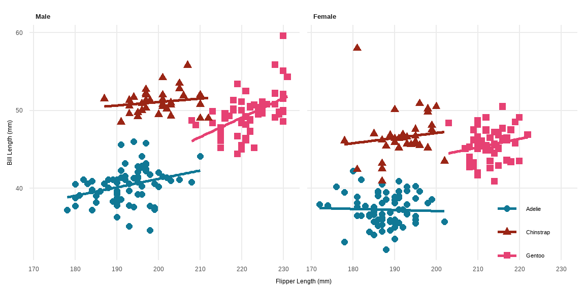
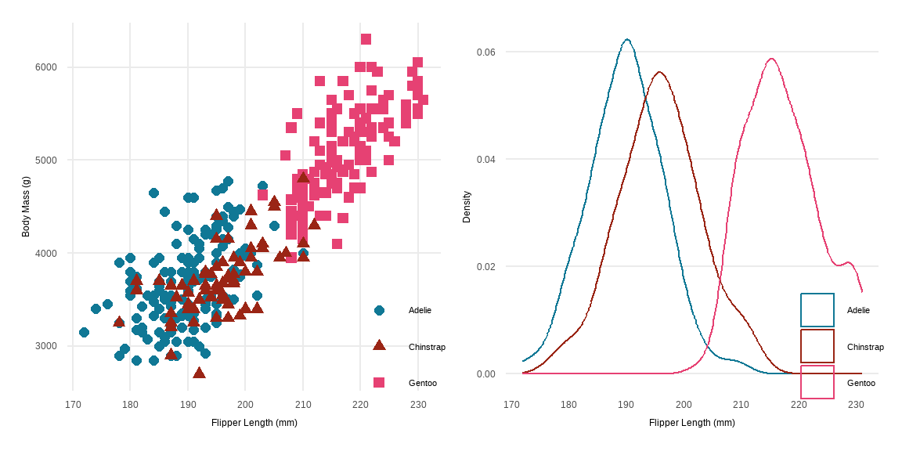

![]()

This document shows a practical usage of the template. I use the Palmer penguins dataset (Horst, Hill, and Gorman 2020) to demonstrate the features of the template. The code is available here.
Section as Heading Level 1
Section numbering can be specified in the YAML section-numbering field as other Typst templates.
Subsection as Heading Level 2
You can use LaTeX math expressions:
\[ Y_{it} = \alpha_i + \lambda_t + \sum_{k \neq -1} \tau_h \mathbb{1}\{E_i + k = t\} + \varepsilon_{it}. \]
I choose a mathematical font which supports the indicator function \(\mathbb{1}\{\cdot\}\). Currently, I use the ?meta:mathfont font.
Subsubsection as Heading Level 3
I don’t use and don’t recommend using heading levels 3 and below but it works.
Citation
You can cite a reference like this (Katsushika 1831) or Horst, Hill, and Gorman (2020). Typst has some built-in citation styles. Check the Typst documentation for more information.
Figures and Tables
Figures
As Figure 1 shows, the caption is displayed below the figure. As a caption of the figure (fig-cap), I use bold text for the title and use a normal text for the description.
When I want to show multiple figures side by side, I use the patchwork package. The reason why I don’t use the layout-col option is that the caption is also split into two parts.

Tables
You can use tinytable for general tables and modelsummary for regression tables. As Table 1 shows, the caption is displayed above the table. The notes of the table can be added using the notes argument of the tinytable::tt() function.
| Male | Female | |||||||
|---|---|---|---|---|---|---|---|---|
| Bill Length (mm) | Bill Depth (mm) | Flipper Length (mm) | Body Mass (g) | Bill Length (mm) | Bill Depth (mm) | Flipper Length (mm) | Body Mass (g) | |
| _Notes_: Data from Palmer penguins dataset. | ||||||||
| Adelie | 40.39 | 19.07 | 192.4 | 4043 | 37.26 | 17.62 | 187.8 | 3369 |
| Gentoo | 49.47 | 15.72 | 221.5 | 5485 | 45.56 | 14.24 | 212.7 | 4680 |
| Chinstrap | 51.09 | 19.25 | 199.9 | 3939 | 46.57 | 17.59 | 191.7 | 3527 |
Since the default backend of modelsummary is tinytable, you can use the customization options of tinytable for modelsummary. In Table 2, I use tinytable::group_tt() function to group the regression results by the dependent variables
| Bill Length (mm) | Body Mass (g) | |||||
|---|---|---|---|---|---|---|
| (1) | (2) | (3) | (4) | (5) | (6) | |
| + p < 0.1, * p < 0.05, ** p < 0.01 | ||||||
| _Notes_: Data from Palmer penguins dataset. | ||||||
| Chinstrap | 10.042** | 10.010** | 10.037** | 32.426 | 26.924 | 27.229 |
| (0.432) | (0.341) | (0.340) | (67.512) | (46.483) | (46.587) | |
| Gentoo | 8.713** | 8.698** | 8.693** | 1375.354** | 1377.858** | 1377.813** |
| (0.360) | (0.287) | (0.286) | (56.148) | (39.104) | (39.163) | |
| Male | 3.694** | 3.694** | 667.555** | 667.560** | ||
| (0.255) | (0.254) | (34.704) | (34.755) | |||
| Year | 0.324* | 3.629 | ||||
| (0.156) | (21.428) | |||||
| Observations | 342 | 333 | 333 | 342 | 333 | 333 |
While tinytable generates compatible tables between LaTeX and Typst, it does not support LaTeX math expressions for Typst tables. I think the compatibility between LaTeX and Typst is crucial for academic writing because it guarantees that the document can be easily converted to LaTeX for submission to journals.
A workaround is to use MiTeX, a Typst package that allows you to use LaTeX math expressions in Typst. I write a custom theme for tinytable to convert LaTeX math expressions to MiTeX expressions. The following table includes LaTeX math expressions but will be converted to MiTeX expressions in the Typst output.
| Math |
|---|
| $\alpha$ |
| $a_{it}$ |
| $e^{i\pi} + 1 = 0$ |
Last words
I made this template for my working papers, so it may not be suitable for other fields than economics. I am happy to receive feedback and suggestions for improvement.
{{< appendix >}}Supplemental Figures
The section numbering will be changed to “A.1.1” in the appendix. The second section in the appendix will be “B”. On the other hand, the figure numbering will be reset to “A.1”, “A.2” so that it is clear that these figures are part of the appendix. The “A” stands for the “Appendix”, not the section numbering.

References
Horst, Allison Marie, Alison Presmanes Hill, and Kristen B Gorman. 2020. Palmerpenguins: Palmer Archipelago (Antarctica) Penguin Data. https://doi.org/10.5281/zenodo.3960218.
Katsushika, Hokusai. 1831. “The Great Wave Off Kanagawa.” https://upload.wikimedia.org/wikipedia/commons/a/a5/Tsunami_by_hokusai_19th_century.jpg.
{kind=link}